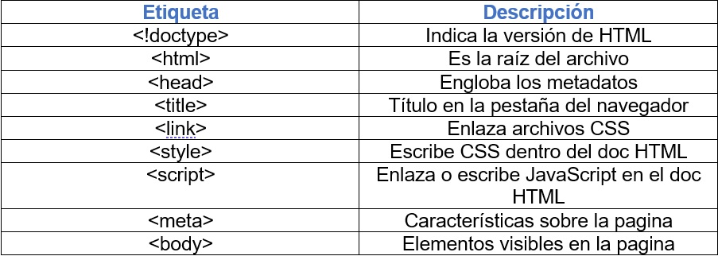

Etiqutas html
Etiquetas base
Son las primeras etiquetas que usas al crear tu archivo HTML. Estas las necesitaras para casi
cualquier proyecto. Las cuales te voy a presentar en una tabla estruturada para que lo comprendas mejor:

“A raíz de la pandemia del COVID-19 la educación virtual ha venido a suplir la necesidad
de la presencialidad, siendo usado por todas las instituciones educativas, esto ha traído
como resultado la necesidad de elaborar recursos educativos digitales para dinamizar las
estrategias de aprendizaje."
La empresa HtmlDesign, de la que soy Diseñador Web me ha contratado por la universidad del
Estado para diseñar un objeto virtual de aprendizaje, para tratar los temas de Diseño de Sitios Web.
En esta primera etapa tiene como proposito dar inicio a los primeros pasos para el diseño y
la construcción de tu primer sitio web .
Con esta presente pagina damos inico al desarrollo de un nuevo recurso de aprendizaje,
que sea de su agrado, les guste y saquen el mejor aprendizaje de este.
En esta imagen les presento un mockup mas detallado de como seria la pagina web ya finalizada
esta
tambien tendria las otras 5 sub paginas, de los otros 5 temas solicitados.
El atributo son distintas modificaciones que puedes hacer a la etiqueta. Como por ejemplo colocarle
un ID, especificar algún evento (como los casos de onsubmit y onclick), o modificar el aspecto visual
(como cambiarle el color a un texto).
A un que en cada una de las etiquetas HTML define sus propios atributos, estos se dividen en cuatro
grupos según funcionalidad los cuales son: